Introdução ao React
O que é o React
O React é uma Framework/biblioteca JavaScript para Frontend.
Utilizado para construir SPAs (Single Page Application)
Baseado em Componentes.
Utiliza JSX para renderizar HTML (JavaScript and XML)
Aplica o Virtual DOM para realizar alterações no DOM
Podemos adicionar a um projeto ou criar um projeto com ele
Criação Projeto React
Antigamente utilizava-se a ferramente 'Create React App', porém essa ferramente criava muitos documentos que não iam ser utilizados e dificultava a manutenção no código, então agora é utiliado 'Vite' para criar.
Criação do Projeto:
- Criar a Pasta do Projeto
- Abrir ela no cmd
- Digitar npm create vite@latest
- Confirmar com y (se for a primeira vez)
- Definir o nome do projeto
- Escolher o Framework
- Escolher Variante (melhor pegar com SWC)
- Ir para a pasta Criada (através do cmd)
- Digitar npm install
- Digitar npm run dev
React Basics
JSX -> é como HTML só que dentro do JavaScript
{ } -> Chaves podem ser usados para interpolar variáveis no conteúdo HTML
Os componentes são criados com funções que retornam um HTML. Toda função que é um componente inicia-se com letra maiúscula. Escreve-se o HTML dentro de () depois do return.
Toda vez que se quer que o react interprete algo como sendo código javascript basta colocar entre chaves { }
Um documento JSX tem que estar iteiro envolto à alguma tag. Ou seja, uma única tag pai.
O React reserva a palavra clas para outra coisa. Então quando queremos colocar uma class em uma tag html utilizamos 'className'
Components
Permite dividir aplicação em partes.
Renderizam JSX
Criar uma pasta e um arquivo para cada Componente.
Precisamos importar o componente onde quisermos utilizar.
Ficam normalmente em uma pasta chamada components.
Ao criar um novo componente, a função normalmente tem o mesmo nome do arquivo.
Para utilizar um componente, devemos importálo e dentro do return da função esrevemos o nome do componente entre uma tag < e />
Os componentes devem ser reutilizáveis.
Props
Props são valores passados para os componentes.
Podemos deixá-los dinâmicos.
É passado como um atributo na chamada do componente.
É preciso ser resgatado dentro de uma propriedade/argumento.
Props ex:Component:
function SayMyName(props){
return (
<>
<p>Hello {props.name}, how are you?</p>
</>
)
}
App.jsx:
function App(){
return (
<>
<SayMyName name="Lucas"/>
</>
)
}
Podemos desestruturar o props com o nome das variáveis que queremos entre chaves { }
Prop Types
PropTypes é um pacote do react, para validar props e variáves. Como o faz o Typescript
Instalação
- No terminal: npm i prop-types
- No documento: import PropTypes from 'prop-types'
As propriedades são declaradas na forma de objeto javascript
PropTypes de Validação
ex:
|| O nome do componente é Item
Item.propTypes = {
marca: PropTypes.string,
ano_lancamento: PropTypes.number.isRequired
}
Esta forma de validação não causará erro na execução do código, porém mostrará erro ao no console. Isso serve para que outros desenvolvedores leiam o seu código.
PropTypes de Valor Default
Item.defaultProps = {
marca: 'Faltou a Marca',
ano_lancamento: 0
}
CSS
Pode ser adicionado globalmente no index.css
É possível estilizar a nível de componente.
Se estiliza componentes com o CSS modules.
Basta criar um arquivo com o nome do compente com um ., module e css
Componente.module.css
Chamar o CSS no componente, utilizando 'import styles from 'path'', o styles é uma convenção.
Utilizando o .module.css evita que o style seja aplicado a outros componentes.
React Fragments
Fragmentos permitem a criação de elementos sem um elemento pai.
O propósito é descomplicar o DOM
A Sintaxe é <> e </>
Eventos
Forma de Fazer
Os Eventos React são os mesmos eventos do DOM
O evento é atrelado a uma tag que irá executá-lo
Geralmente um método é atribuído ao evento.
Este método deve ser criado no componente.
ex: 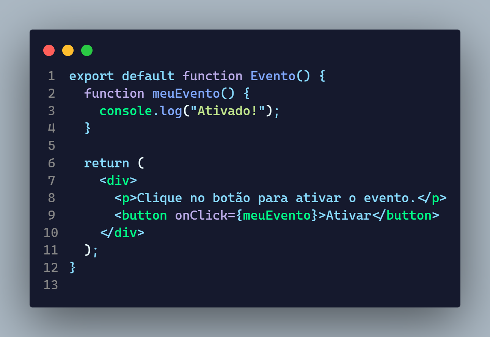Forms com React
Para impedir que um form recarregue a página, chamase o parâmetro da função com a função preventDefault()
ex: 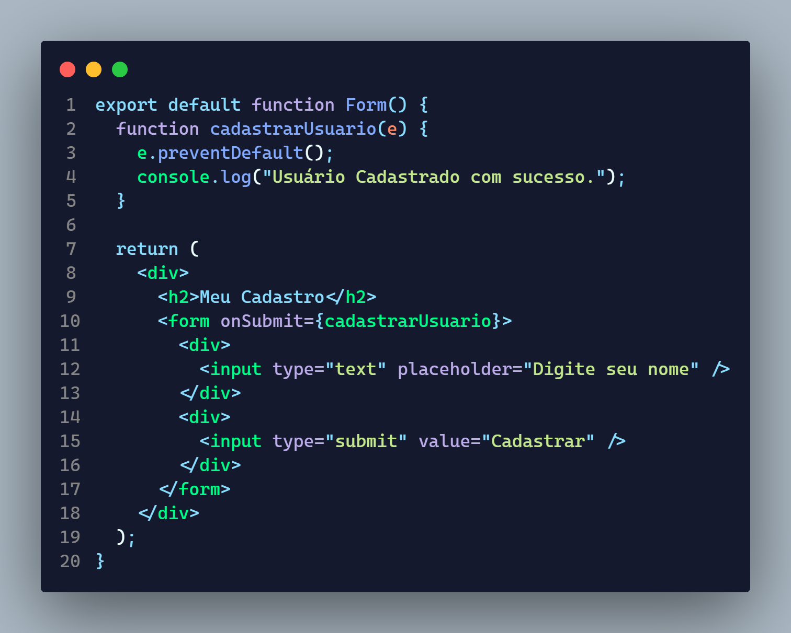useState
- O useState é um hook do react
- Com ele conseguimos manusear o estado(dado) de um componente de forma simples;
- Esse hook funciona muito bem com eventos
- Podemos atrelar um evento à mudança de state
- Todos os hooks tem que ser importados.
- import { useState } from 'react'
- O useState é um jeito de abreviar a aleterção de algum valor na tela. Normalmente definiría-se uma variável e usaria querySelector para selecionar um elemento do DOM e implementar no DOM essa varíavel com o innerText. useState abrevia isso.
-
Forma:
const [variavel, setVariavel] = useState(valor_da_variavel)
setVariavel(alteração que acontecerá)
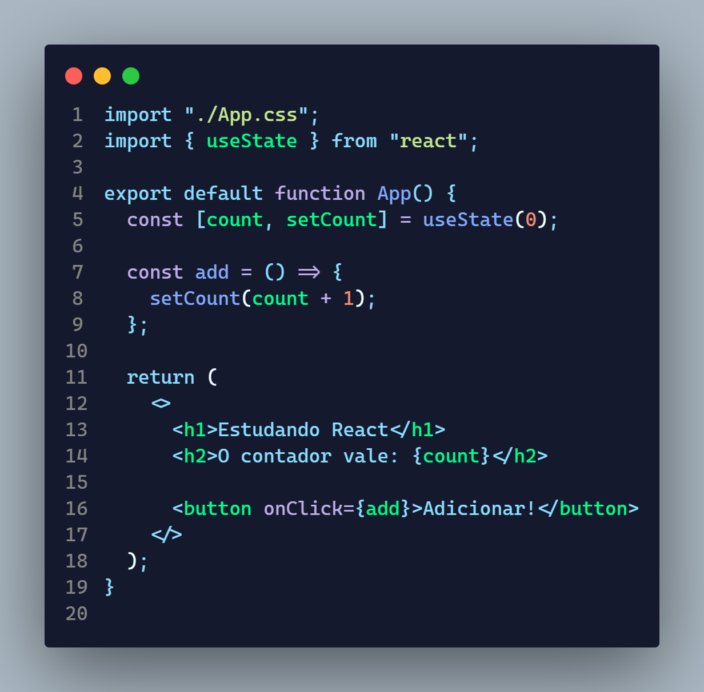
Outro Exemplo de useState:
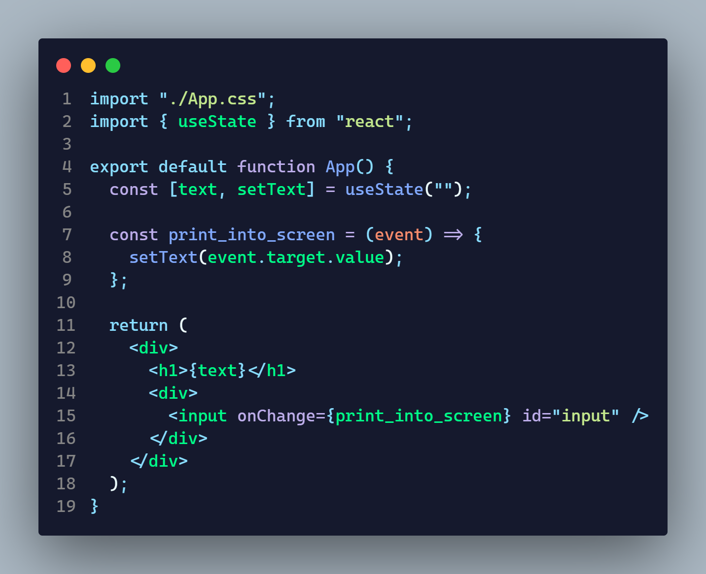
Dica: Quando uma função é chamada dentro de um evento no react, o react passa automaticamente o evento desta tag como argumento para esta função. O .target serve para selecionar a tag ao qual este evento está inserido, o value serve para acessar o valor desta tag.
Renderização Condicional
- Podemos atrelar a exibição de algum elemento a um if;
- Esta ação é chamada renderização condicional;
- Envolvemos as Tags em Chaves { };
- Como as chaves executam JavaScript, criamos condições;
- É possível usar o state para criar condições.
- Em react o operador && serve para Renderizações condicionais, diferente do JavaScript tradicional;
- && -> Renderize o elemento à direita se o a esquerda for verdadeiro.
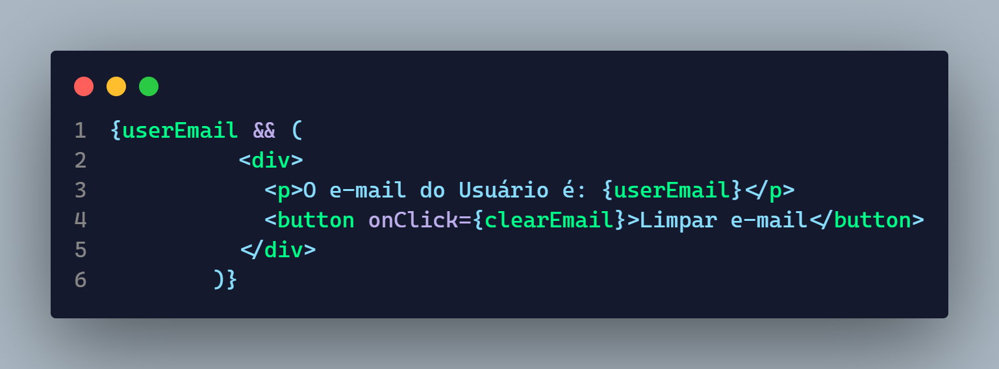
É preferível utilizar && em condicionais, porém é utilizado operadores ternários.
ex: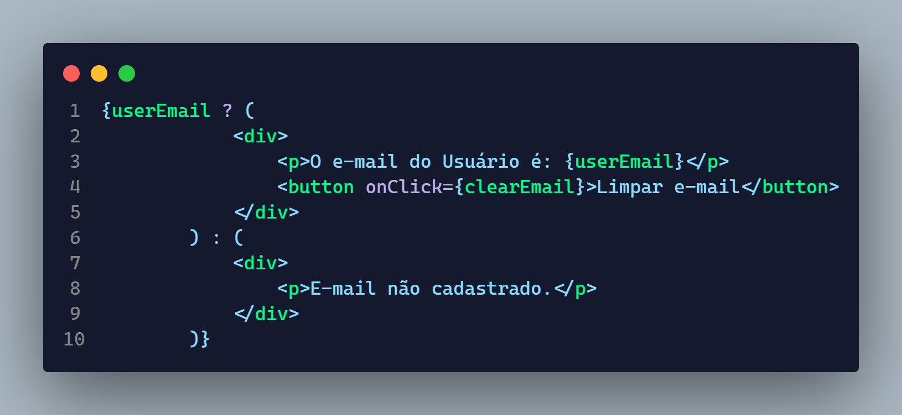
Renderização de Listas
- Para renderizar listas vamos precisar de um Array;
- Depois utilizamos a função Map para percorrer cada um dos itens;
- Podendo assim renderizar algo na tela;
- É possível unir operadores condicionais com a renderização de listas.
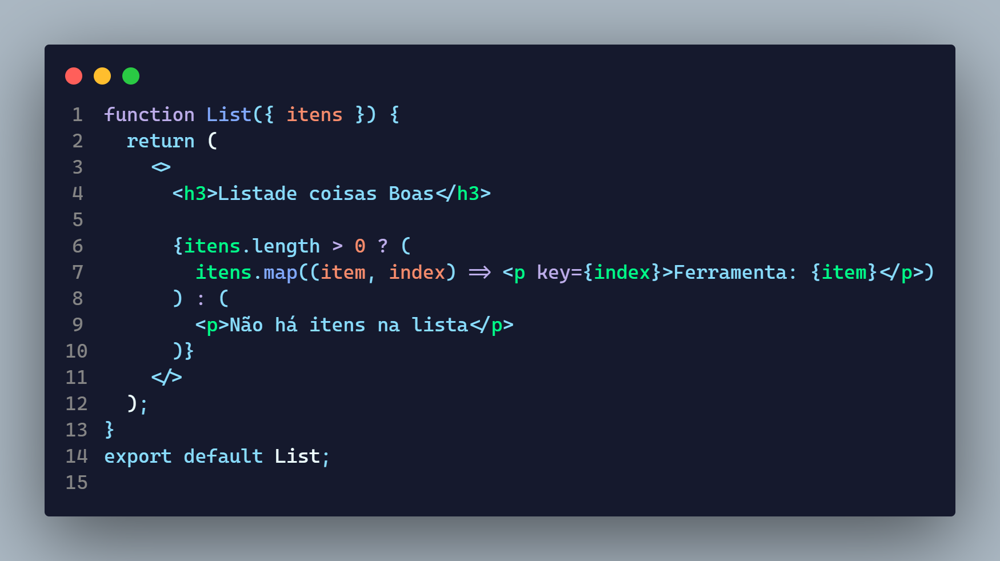
State Lift
- State Lift é um técnica utilizada para compartilhar o state.
- É normal vários componentes dependerem do mesmo estado;
- Então precisamos elevar o nível do mesmo a um componente pai;
- Então centralizamos o state no pai, e definimos quem usa e quem define (setState)
- Serve para usar a mesma var do useState em vários componentes. Isso se faz criando no componente pai e se passa atrvés de props e parâmetro da função filha.
React Router
Sobre
React Router é um pacote externo ao react que serve para criar diferentes páginas com o react.
INSTALAÇÃO REACT ROUTER
- No Terminal Digitar: npm install react-router-dom
CONFIGURAÇÃO REACT ROUTER
- Dentro do SRC, criar a pasta Routes, que terá todas as notas páginas no formato de Componente
- No main.jsx colocaremos os seguintes comandos:
import { createBrowserRouter, routerProvider } from "react-router-dom";import __NOSSA PÁGINA__ from "__CAMINHO DA NOSSA PÁGINA__"const router = createBrowserRouter([]);|| Esse array vai receber objetos com as propriedades path, que receberá o caminho, e a propriedade element que receberá a tag do componente. A página Home recebe "path: "/" ", as outras recebem o nome da página.- Apagar o
<App />e colocar:<RouterProvider router={router} />|| Aquele router é a variável que foi criada anteriormente.
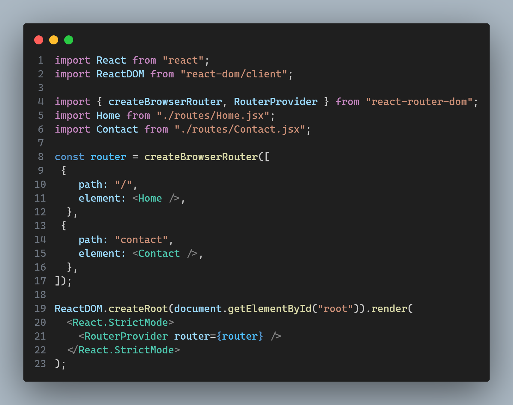
REAPROVEITAMENTO DE ESTRUTURA
- É melhor ao invés de colocar as páginas assim, colocar um objeto só que é a página App.jsx, com o
path: "/", element: <App /> e children: [__Colocar aqui as páginas__]. - Então no App.jsx colocar:
import { outlet } from "react-router-dom"e chamar a tag<Outlet />onde queremos que o componente da página seja renderizado. - Assim podemos fazer com que uma página seja um componente renderizado dentro de uma página principal.
Main.jsx:
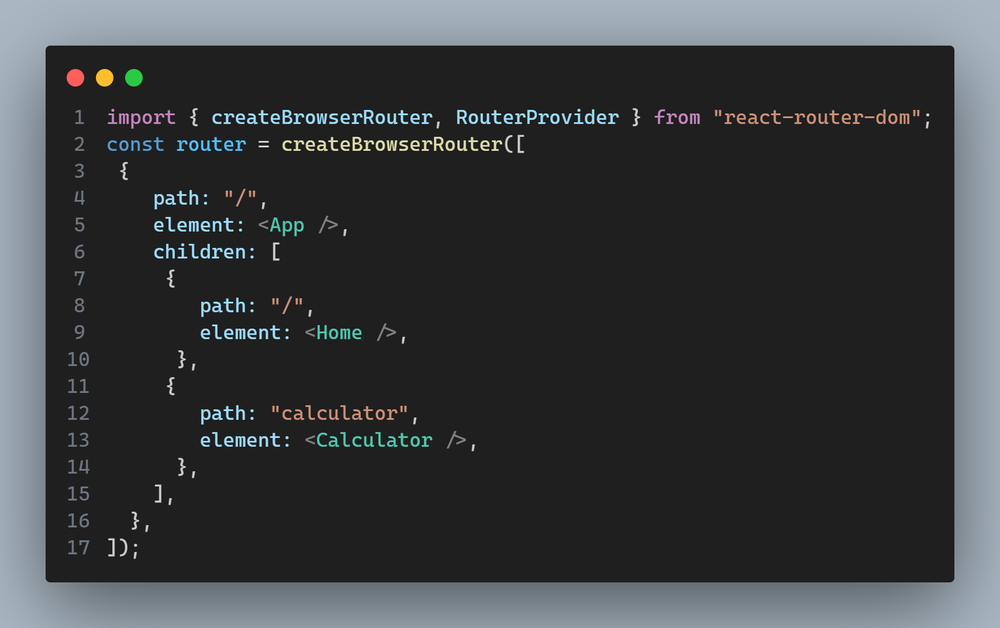
App.jsx:
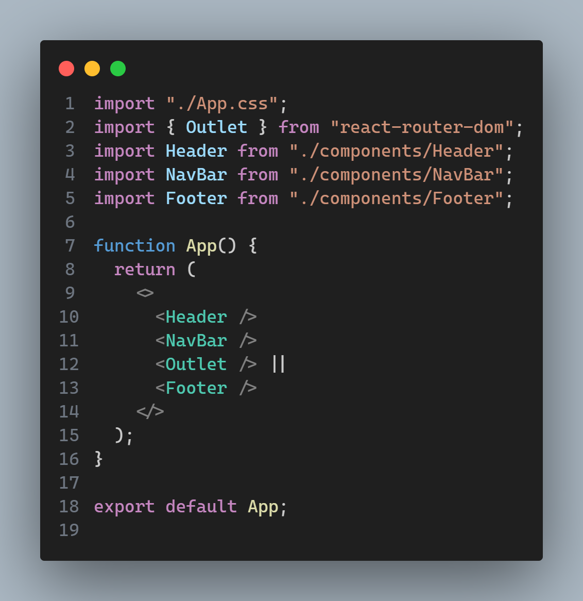
Error Page
Para criar uma página de erro, uma página 404, com o React Router é muito simples.
- Criar a página de erro.
- Importar ao Main.jsx a página chamando a propriedade e a sua tag.
- Inserir a propriedade "errorElement: <ErrorPage />" dentro da const router do main
Links
O comando "Link" tem que ser importado do react-router-dom
- import { Link } from "react-router-dom
- Cologar dentro das tags Link o que será o link
- Dentro da abertura da tag Link, colocar a propriedade to="", com o nome da página que foi definido no path do main.jsx.
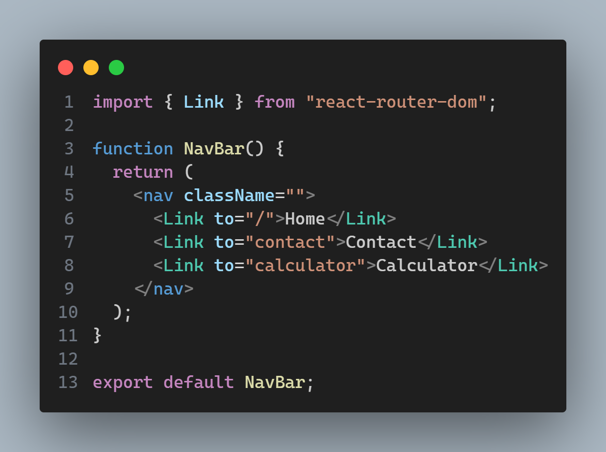
Links Dinâmicos
- É possível criar Links Dinâmicos com o React Router, onde o link pode mudar
- O ":" define que a próxima palavra será dinâmica, normalmente escolhe-se a palavra id para identificar.
Main.jsx:
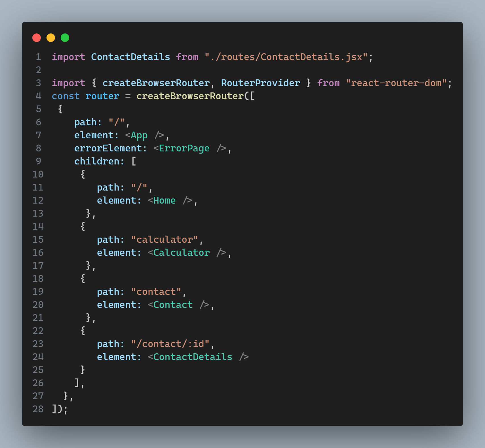
Contact.jsx:
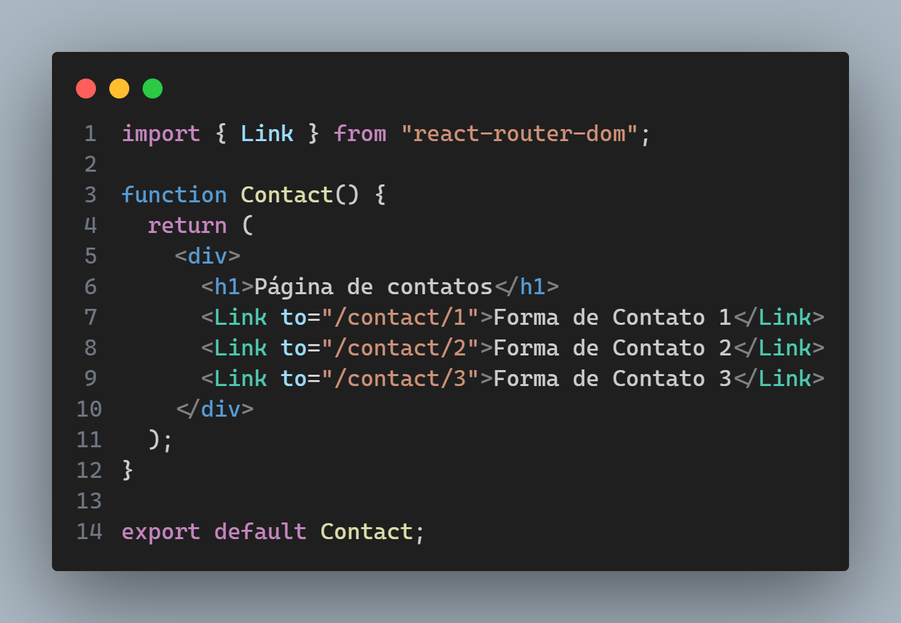
Use Params
- useParams é um hook do React Router que permite extrair as informações que vem da URL dinâmica
import { useParams } from "react-router-dom"const { id } = useParams();Essa variável id tem que coincidir com o a variável do link dinâmico ":id" colocado no main.jsx
ContactDetails.jsx - /contact/:id 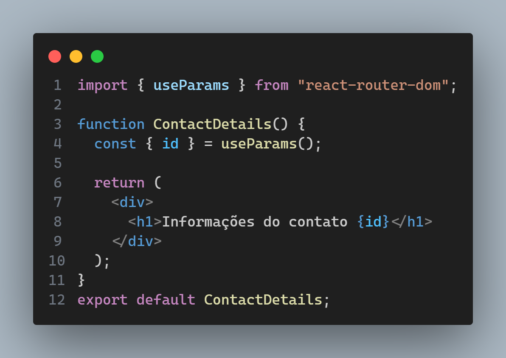
Use Navigate
- useNavigate() é um Hook do react-router-dom que serve para redirecionar uma pessoa na lógic.
import { useNavigate } from "react-dom-router"const navigate = useNavigate()
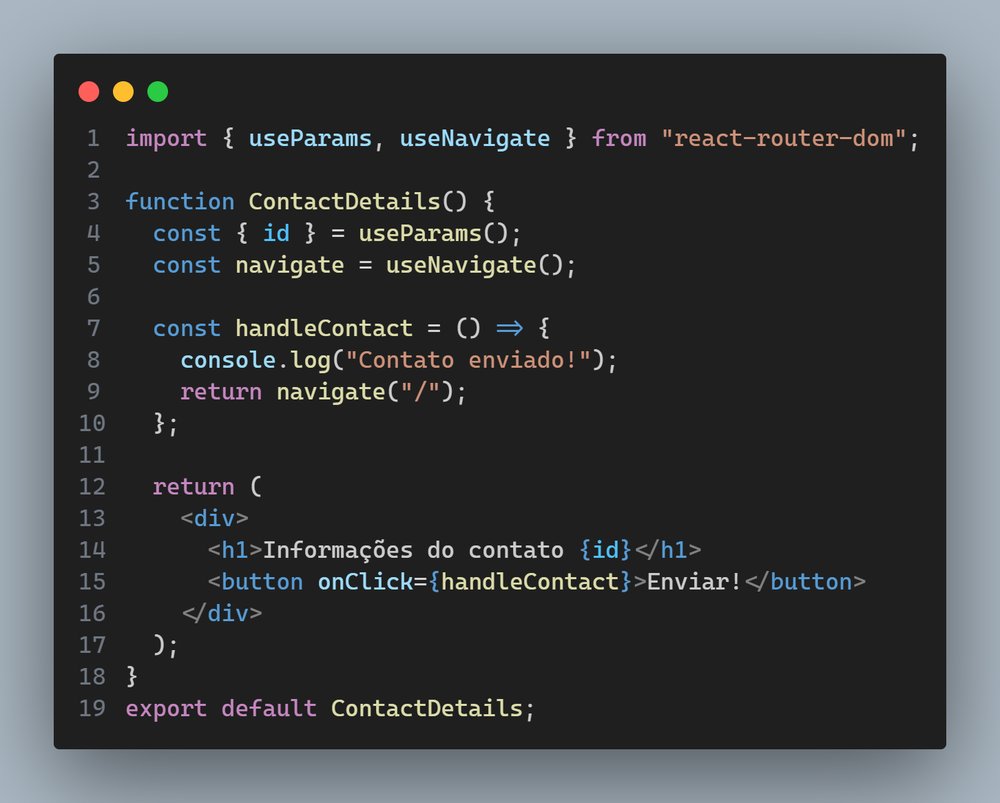
Navigate
- Isso serve para páginas que deixaram de existir. Então quando a pessoa acessa essa página ela é automaticamente redirecionada para outra página.
- No Main.jsx:
import { Navigate } from "react-router-dom" - No Router:
{path: "oldcontact", element: <Navigate to="/contact" />}
React Icons
- React Icons é um pacote de ícones externo muito utilizado;
- Precisaos adicionar ao projeto através do npm;
- Ele nos permite adicionar ícones ao projeto com uma sintaxe similar a de componentes;
- Há uma grande quantidade de ícones disponíveis e é muito utilizado.
- No Terminal: npm install react-icons
- Importar: import { nomeDoIcone } from 'react-icons/fa'
- Chamar o Ícone: <nomeDoIcone/>>
React Hooks
Use State
Use Effect
Visão Geral:
- Executa uma função toda vez que algo acontecer
- Recebe 2 parâmetros. 1 -> A função que será executada. 2 -> Um array que contenha as variáveis que ao atualizar, ativarão o useEffect()
- Caso não seja passado o segudo parâmetro, ele executa toda vez que qualquer um dos componentes renderizarem.
Use Ref
Visão Geral:
- A vantagem do useRef() é que quando atualiza seu valor, ele não atualiza re-renderiza o componente.
- Caso um useEffect tenha dentro de si um useState e não tenha alguma variável de controle, ele cai num loop infinito. useRef() resolve esse problmea
- Declar ref:
const numberRef = useRef(0) - Recebe valor inicial dentro dos parenteses
- useRef na verdade é um objeto que possui a propriedade current.
- Para acessaro valor temos que usar o nome da variável.current
- Isso faz com que o número altere na tela porem não re-renderize a página.
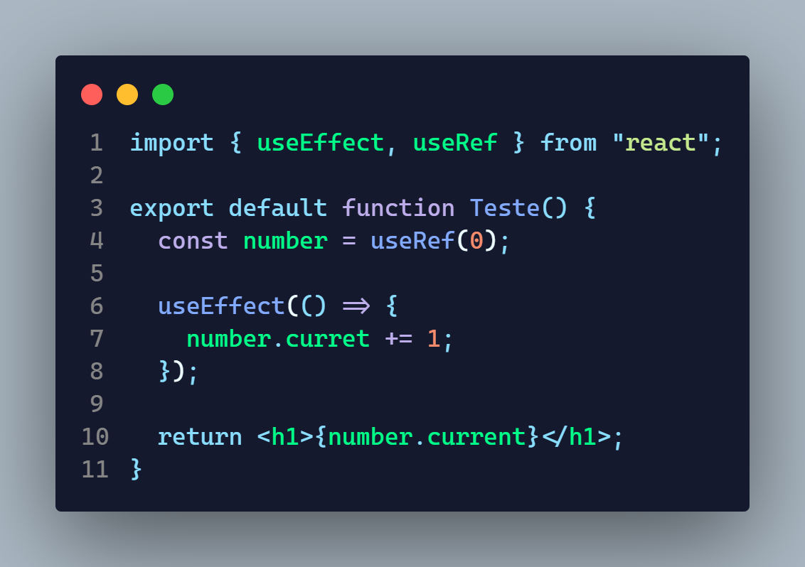
Segunda função useRef()
Pegar Elementos DOM
- Toda tag html dentro do JSX tem uma propriedade chamada "ref".
- Podemos dizer que essa propriedade recebe uma useRef, então a propriedade current do useRef recebe a tag html
- Isso serve para fazer manipulação DOM
- Podemos então fazer com que o próprio computador gere um evento, utilizando o nome do evento com abre-fecha parenteses.
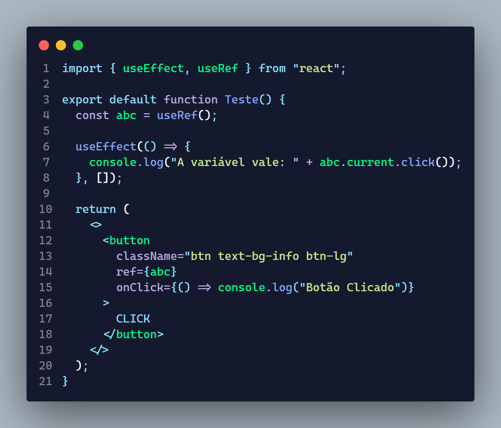
Terceira função useRef()
Salvar Valores anteriores useState()
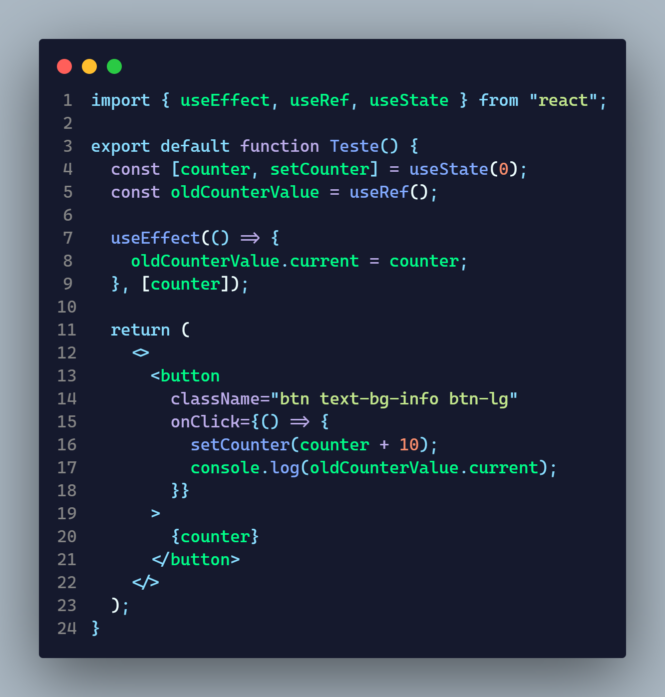
Use Context
Visão Geral:
Serve para fazer variáveis serem englobadas em vários componentes.
Criar Context:
import { createContext } from "react"const AppContext = createContext()- Envoler nas tags
<AppContext.Provider value={{variaveis}}></AppContext.Provider>o que queremos que esteja dentro do contexto
Usar Context
- Após criar o context, chamamos ele através do useContext
import { useContext } from "react"const { name, setName } = useContext(AppContext)